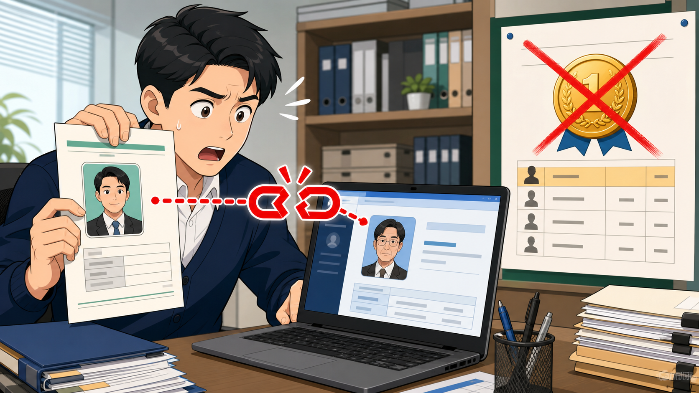
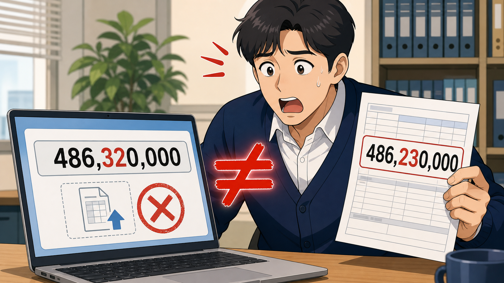
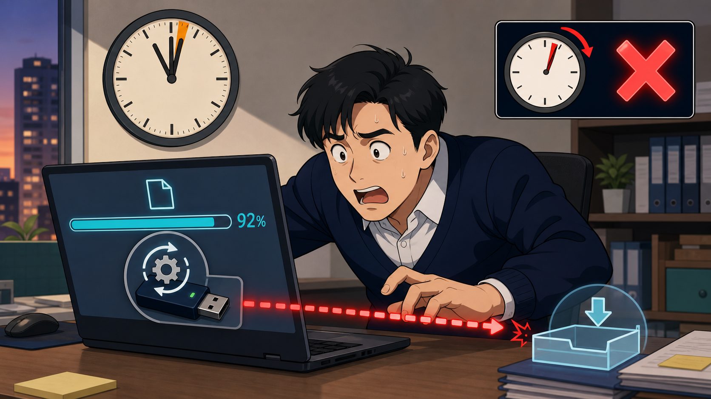

입찰 이야기 · 제3편
입찰에서 자주 하는 실수
한 번의 실수로 무효가 되는 사례 3가지
먼저 기억할 것 가격을 잘 맞혀도 자격·서류·시간 중 하나가 어긋나면 그 투찰은 심사 대상에 오르지 못한다. 아래 사례는 공공입찰 현장에서 반복적으로 경고되는 유형을 교육용으로 재구성한 것이다.
01 참가자격과 등록정보 불일치
개찰 1순위였지만 ‘입찰할 자격이 없는 업체’로 판단된 사례

사례 1. 새 대표자 서류와 구 대표자 전산정보가 달라 개찰 1순위가 취소되는 순간.
무슨 일이 있었나 업체는 대표자 변경등기를 마쳤지만 나라장터 등록정보를 갱신하지 않았다. 담당자는 예전 인증서로 정상 투찰됐으니 문제가 없다고 생각했다. 개찰 결과 가격은 가장 유리했지만, 등록된 대표자 정보와 현재 법인정보가 달라 유효한 입찰로 인정되지 않았다.
왜 무효가 됐나 입찰참가자격이 없는 자의 입찰은 무효가 될 수 있고, 대표자·상호·면허 등 필수 등록사항의 변경 미반영 역시 공고와 적용 규정에 따라 무효 사유가 된다.
예방 체크 공고 전날 ‘경쟁입찰참가자격등록증’을 출력해 상호, 대표자 전원, 사업자번호, 주소, 면허·업종, 등록 유효기간을 법인등기·면허증과 대조한다. 공동수급이면 구성원 전부를 같은 방식으로 확인한다.
02 입찰금액과 첨부내역 불일치
마지막 숫자 한 자리 때문에 유효한 가격이 사라진 사례

사례 2. 입찰서 486,320,000원과 내역서 486,230,000원이 달라 무효가 되는 순간.
무슨 일이 있었나 내역입찰로 산출내역서를 함께 제출해야 하는 공고였다. 입찰서에는 486,320,000원을 입력했지만, 이전 파일을 복사해 수정한 산출내역서 합계는 486,230,000원이었다. 차이는 9만원뿐이었지만 두 금액이 일치하지 않아 가격 비교에서 제외됐다.
왜 무효가 됐나 산출내역서 동시 제출이 요구되는 입찰에서는 내역서 누락 또는 입찰서 금액과 내역서 합계 불일치가 무효 사유가 될 수 있다. 서명·날인, 지정 서식, 파일 형식 등 공고가 요구한 필수요건 누락도 같은 위험을 만든다.
예방 체크 입찰금액과 내역서 합계를 하나의 원본 셀에서 불러오고, PDF 변환 후에도 합계를 다시 읽는다. ‘입찰서 금액 = 내역서 총계 = 검토표 금액’을 두 사람이 교차 확인한 뒤 파일을 올린다.
03 마감 직전 제출과 확인 실패
업로드 화면은 열려 있었지만 입찰서는 기한 안에 도착하지 않은 사례

사례 3. 마감 2분 전 시작한 전송이 92%에서 멈추고 인증서 업데이트로 제출에 실패한 순간.
무슨 일이 있었나 마감 2분 전에 전송을 시작했는데 인증서 모듈 업데이트가 실행됐다. 재접속 후 파일을 올렸지만 마감시각이 지나 ‘제출 완료’ 문서가 생성되지 않았다. 다른 사례에서는 입찰보증서 전송이 끝났다고 생각했지만 기관 수신 여부를 확인하지 않아 무효 처리됐다.
왜 무효가 됐나 입찰서는 정해진 도착시각까지 전자조달시스템에 정상적으로 수신돼야 한다. 공고에서 요구한 입찰보증금 또는 보증서도 납부기한 안에 확인돼야 하며, 단순히 업로드를 시작했거나 화면을 캡처한 것만으로는 제출 완료가 되지 않는다.
예방 체크 전날 인증서·브라우저·보안모듈을 점검하고, 최소 2시간 전에 투찰한다. 제출 뒤에는 보낸문서함·문서번호·수신상태·보증서 도착 여부를 확인하고 화면과 확인서를 함께 보관한다.
- 우리 회사와 공동수급 구성원의 참가자격은 오늘 기준으로 유효하다.
- 나라장터의 상호·대표자·주소·면허 정보가 증빙서류와 일치한다.
- 입찰서 금액과 모든 산출·첨부자료의 합계가 완전히 같다.
- 공고가 요구한 서식, 서명·날인, 파일 형식과 보증 절차를 지켰다.
- 마감 전에 제출 완료됐고 보낸문서함에서 정상 수신을 확인했다.
- 제출자 외 한 사람이 최종 결과를 독립적으로 재확인했다.
※ 입찰 무효 사유와 제출요건은 국가계약·지방계약 여부, 입찰방식 및 개별 공고에 따라 달라질 수 있습니다. 실제 제출 전에는 해당 공고문, 전자입찰 특별유의서, 입찰유의서와 최신 법령을 우선 확인하십시오.
※ 본 글은 개인의 실무 경험을 정리한 참고자료입니다. 실제 입찰에서는 해당 공고문, 발주기관 특수조건, 조달청 공지사항을 우선 확인하시기 바랍니다.